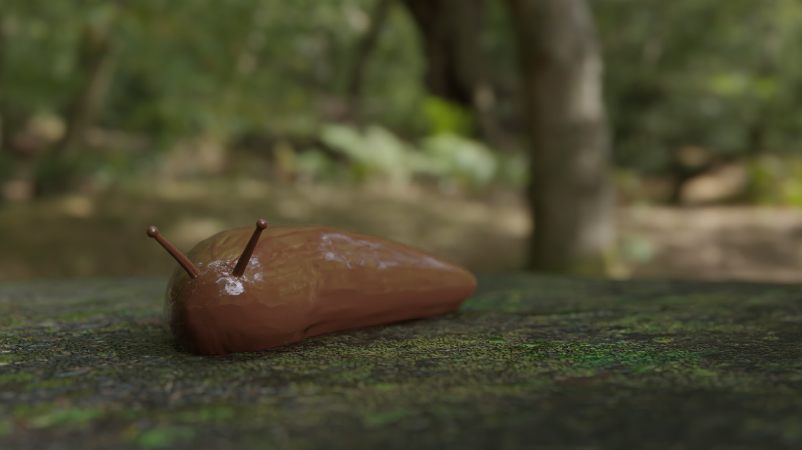

Back
The Slug
The slug model was an experiment in non-humanoid figures. Designing and animating animals or otherwise non-human creatures will likely come up in the career of a 3D animator; so I've tested that here.
The slug was based on an icosphere that I stretched to make it into a pill shape. From there, I used proportional editing to adjust the shape of the slug.
After reviewing some reference images, I realized that I needed to model the slug's stalks. To do that, I started with a base primative cylinder and added a primative UV sphere to the top. This was a fairly simple model.
Next was the texturing process. Since a slug is a slimy organic creature, I knew it's material would need high subsurface scattering. Subsurface scattering is what happens when light shines through things with skin; the light will scatter and reflect some of the interior color. For example, when you shine a light through your finger it glows red.
A few other things I added were displacement and a membrane layer. The displacement was a simple noise texture to give the slug some organic irregularities. The membrane layer was an effect achieved by using the 'Layer Weight' node. This node outputs a value map of the edges of the model. This allowed me to plug it into the alpha port to make the edges of the slug slightly transparent.
Something I wanted to do was have the slug leave a trail of slime behind it on the ground. I didn't want to hand animate a texture map for this though, since that would take time and wouldn't update if I decided to change the animation. So I decided to research the 'Dynamic Paint' feature in Blender. What this does is it allows you to set one mesh as a canvas (in my case the ground plane) and another mesh as a brush (in my case the slug). Then, the brush object can draw texture maps onto the canvas object in realtime. Perfect! This is exatly what I wanted; I can plug the Dynamic Paint 'wetness' map into the 'roughness' port of my material.
WHAT TUTORIALS USED? LINK, CONTINUE

SUB IMAGE^ . . . MAIN IMAGEv